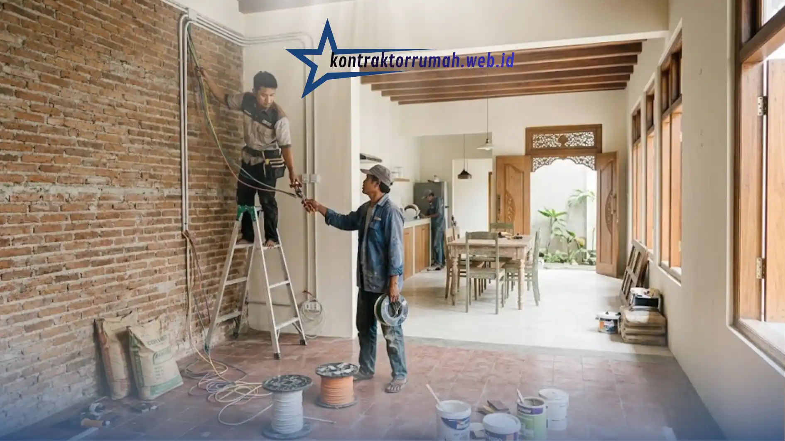

Mendapatkan rumah peninggalan keluarga adalah anugerah, tapi sering datang dengan tantangan: cat mengelupas, tata ruang sempit, hingga pipa air yang sudah berkarat. Banyak orang menunda renovasi karena takut biayanya membengkak tanpa kendali.
Padahal, dengan strategi yang tepat, renovasi rumah warisan bisa dilakukan bertahap sesuai anggaran tanpa mengorbankan kualitas. Berikut panduan lengkap agar proyek renovasi Anda berjalan lancar dan hemat biaya.
Poin Penting
- Cek dulu kondisi atap, kelistrikan, dan saluran pembuangan sebelum memikirkan estetika.
- Elemen lama seperti lantai tegel dan kusen jati bisa dipertahankan untuk menghemat biaya material baru.
- Bongkar dinding non-struktural untuk kesan open space, tapi konsultasikan dulu dengan tukang atau arsitek.
- Cat warna terang adalah trik termurah dengan dampak visual paling besar.
- Renovasi ringan-sedang bisa dikerjakan bertahap sesuai anggaran tanpa mengorbankan kualitas.
Cek Kondisi Struktural Terlebih Dahulu
Sebelum memikirkan estetika, pastikan fondasi, dinding, atap, dan instalasi listrik masih aman. Rumah berumur 20-30 tahun umumnya butuh pengecekan pada tiga titik utama:
- Atap dan rangka kayu — cek apakah ada rayap atau lapuk. Perbaikan rangka atap biasanya berkisar Rp150.000-300.000/m², tergantung tingkat kerusakan.
- Instalasi listrik lama — kabel berusia lebih dari 15 tahun sebaiknya diganti total demi keamanan, dengan biaya rewiring sekitar Rp50.000-100.000 per titik.
- Saluran pembuangan dan septic tank — pastikan tidak ada rembesan atau penyumbatan kronis sebelum melangkah ke tahap finishing.

Pengecekan atap, kelistrikan, dan saluran pembuangan wajib dilakukan sebelum masuk ke tahap finishing.
Perbaikan struktural adalah investasi jangka panjang; mengabaikannya hanya akan memindahkan masalah ke belakang hari dengan biaya yang lebih besar.
Pertahankan Karakter Asli Bangunan
Anda tidak perlu merombak total 100% bangunan. Beberapa elemen lama justru punya nilai estetika dan bisa menghemat biaya material baru:
- Lantai tegel klasik — cukup dipoles ulang dan diberi lapisan coating agar mengkilap kembali, jauh lebih murah dibanding memasang lantai baru.
- Kusen dan pintu kayu jati tua — kayu jati lama biasanya lebih kuat dari kayu baru kelas menengah; cukup diamplas dan dipernis ulang.
- Dinding bata ekspos — jika kondisinya masih kokoh, bisa dibiarkan tanpa plester sebagai elemen dekoratif bergaya industrial.
Terapkan Konsep Open Space
Rumah lama sering memiliki banyak sekat kamar yang membuat ruangan terasa gelap dan sempit. Membongkar satu atau dua dinding non-struktural (bukan dinding penyangga) untuk menyatukan ruang keluarga dan ruang makan bisa memberi ilusi rumah yang jauh lebih luas.
Konsultasikan dengan tukang atau arsitek terlebih dahulu untuk memastikan dinding yang dibongkar memang tidak menopang beban bangunan.
Gunakan Cat Warna Terang
Ini trik paling murah dengan dampak paling besar. Warna putih, krem, atau abu-abu muda menyamarkan kesan kusam dan membuat rumah warisan terasa seperti bangunan baru. Satu kaleng cat 25kg (sekitar Rp400.000-600.000) umumnya cukup untuk 40-50m² dinding dengan dua lapis.
Estimasi Total Biaya Renovasi Ringan-Sedang
Sebagai gambaran awal untuk menyusun anggaran, berikut kisaran biaya per komponen pekerjaan:
| Komponen | Estimasi Biaya |
|---|---|
| Perbaikan atap & rangka | Rp150.000-300.000/m² |
| Rewiring listrik | Rp50.000-100.000/titik |
| Pengecatan ulang | Rp15.000-25.000/m² |
| Bongkar dinding non-struktural | Rp100.000-200.000/m² |
Catatan dari tim Kontraktor Rumah: Angka di atas adalah estimasi umum yang bisa berbeda tergantung lokasi proyek dan tingkat kerusakan bangunan. Konsultasikan kondisi rumah warisan Anda secara langsung agar mendapat RAB yang lebih akurat.
FAQ Seputar Renovasi Rumah Warisan Lama
Renovasi rumah warisan tidak harus dilakukan sekaligus dan menguras seluruh tabungan. Dengan mendahulukan perbaikan struktural, mempertahankan elemen lama yang masih layak, dan mengerjakan proyek secara bertahap, Anda tetap bisa mendapatkan hasil maksimal tanpa membebani anggaran.